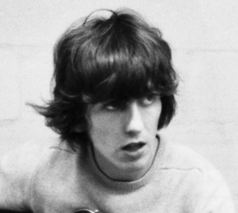

John Winston Lennon was born on the 9th of October 1940 at Liverpool Maternity Hospital. He was the only child of Alfred and Julia Lennon. He had a troubled upringing that included
an absent father and a negligent mother which resulted in him mostly being raised by his aunt Mary "Mimi" Smith and uncle George Smith. Most likely because of this John
was something of a delinquent in his youth and was on track to end up working the docks if he hadn't discovered music first. His mom would teach him to play
the banjo before he eventually made the switch to guitar. Inspired by the likes of Elvis Presley, Carl Perkins, and Lonnie Donnegan he founded a band with his high school
friends called The Quarrymen that would play at local fairs and pretty much anywhere that would let them.

George Harrison: Lead Guitarist
George Harrison was born on the 25th of February 1943. He was the youngest of four children of Harold and Louise Harrison. Harold was a bus conductor who had worked as a
ship's steward on the White Star Line, and Louise was a shop assistant of Irish Catholic descent. He had one sister, Louise, and two brothers, Harold and Peter.
George's love of music came from his mother who by all acounts was a very loving and supportive mother. She reportedly would sing so loudly that it would shake the
windows of the Harrison household. George was a huge fan of Chet Atkins and he would be the main inspiration behind George's decision to pick up the guitar. George was also
childhood friends with Paul as the two rode the same bus to school everyday and it was Paul who would eventually introduce him to John and suggest that they add George to the
band.